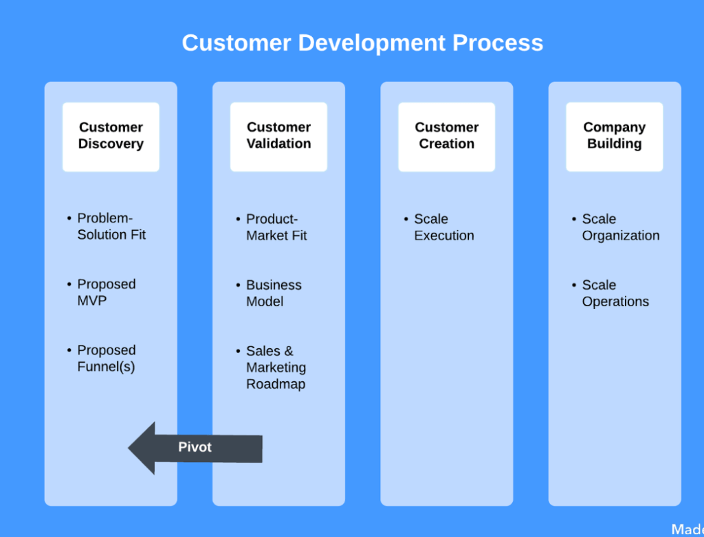
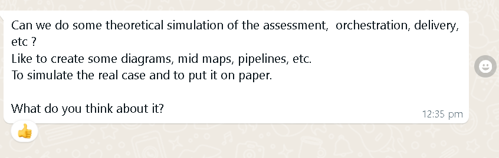
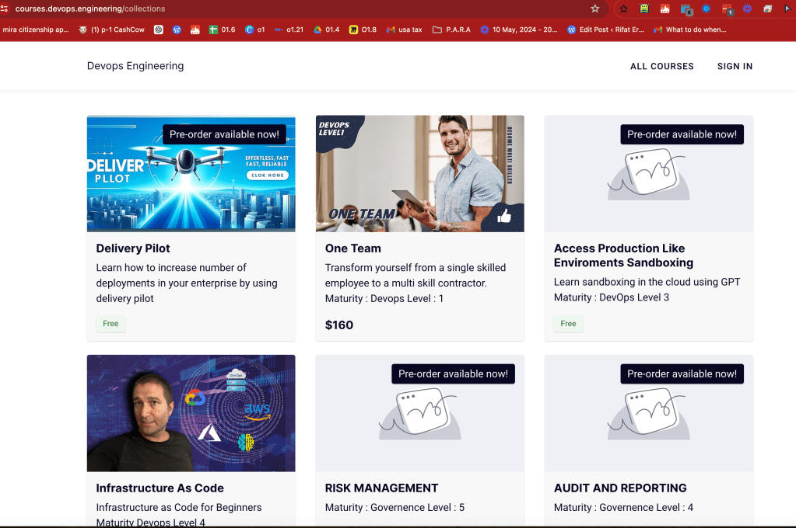

Customer Development ( Delivery Pilot 2024 )

The Customer Development Matrix, proposed by Steve Blank, is a strategic framework used to systematically discover and validate customer needs and build a scalable business model. It consists of four key steps:
-
Customer Discovery > 2023 Oman
-
Customer Validation > 2024 Cambridge
-
Customer Creation >>> 5 years after profit
-
Company Building >>> 10 years after scale
Customer Development Matrix Steps
1. Customer Discovery
Oman 2023
Objective: Understand the problem, identify potential customers, and develop an initial hypothesis about their needs. > Oman / GoldmanSachs
-
Hypothesis Development: Formulate hypotheses about customer problems, needs, and the market. > Delivery On Demand in 1000 component enterprises with 100+ stakeholders
-
Problem Interviews: Conduct interviews with potential customers to understand their problems and validate your hypotheses. > 13 Meetings https://www.canva.com/design/DAF23OQVMms/lbhsNWtpi6U1BLwi4DRBWw/edit
-
Solution Interviews: Present a preliminary solution to the customers to gather feedback. > 4 roles documentation and knowledge transfer
-
Minimum Viable Product (MVP): Develop an MVP that addresses the identified problems and test it with a small group of early adopters. > onpremise Gateway documentation with logic apps / locale lead generator based on same framework
2. Customer Validation
2024 Cambridge
Objective: Validate that the product or service solves a significant problem and that customers are willing to pay for it.
- Value Proposition Testing: Ensure that the product delivers value to the customer and meets their needs. > Orchestrators(partners) working together show cased in the Video trainings. GPT usage mixed to workflow on IAC environments

-
Customer Feedback: Collect feedback from the early adopters and refine the product based on this feedback. > Ask Udemy course takers for their referral
-
Sales and Pricing Model: Develop and test a viable sales and pricing model to ensure customers are willing to pay for the solution. > Estimation 10x value , 7 figure 4 partner contract
-
Metrics and Goals: Establish metrics to measure success and validate that there is a repeatable and scalable sales process. 10x> increase delivery pipelines
3. Customer Creation
(Wait with profit accumulation)+5 years > https://www.youtube.com/watch?v=FBOLk9s9Ci4
Objective: Create demand for the product through marketing and sales efforts.
-
Market Positioning: Define the market positioning and messaging to attract the target audience.
-
Marketing Campaigns: Implement marketing campaigns to generate leads and create awareness.
-
Sales Channels: Develop and optimize sales channels to convert leads into paying customers.
-
Customer Acquisition Cost (CAC): Monitor and manage the cost of acquiring new customers to ensure profitability.
4. Company Building
(Wait till the company is unable to serve with skin in the game partners)+10 years
Objective: Transition from a startup to a scalable business by creating formal organizational structures and processes.
-
Organizational Design: Establish a formal organizational structure, defining roles and responsibilities.
-
Process Development: Develop and document processes for marketing, sales, customer support, and operations.
-
Team Building: Hire and train a team to execute the business model effectively.
-
Scaling Operations: Scale operations to handle increased demand while maintaining quality and customer satisfaction.
-
Performance Metrics: Continuously monitor key performance indicators (KPIs) to ensure the business is on track for growth and profitability.
Customer Development Matrix Steps in Detail
Customer Discovery
-
Define Problem and Hypotheses:
-
Identify target customer segments.
-
Develop hypotheses about customer problems and needs.
-
Create a preliminary value proposition.
-
Conduct Problem Interviews:
-
Engage with potential customers to understand their pain points.
-
Validate the existence and significance of the problem.
-
Solution Development:
-
Develop an MVP that addresses the identified problems.
Delivery Pilot
- Test the MVP with early adopters and gather feedback.
Azure IAC
-
Iterate and Refine:
-
Refine the product based on customer feedback.
Meetings
- Adjust the value proposition as needed.
Focus on increase deliveries
Customer Validation
-
Test Product-Market Fit:
-
Validate that the product solves the problem effectively.
Delivery pilot pointing out the direction for the tnerprise
- Ensure customers see significant value in the solution.
Customers implementing best practices
-
Develop Sales and Pricing Model:
-
Test different pricing strategies.
Estimate the time needed
- Develop a repeatable sales process.
Similar customers and reusable framework
-
Measure Success:
-
Establish metrics to track customer acquisition, retention, and satisfaction.
Content creation based on best practices and orchestration
- Validate that there is a scalable and repeatable business model.
Customer Creation
-
Market Positioning and Messaging:
-
Define clear and compelling market positioning.
-
Develop messaging that resonates with the target audience.
-
Launch Marketing Campaigns:
-
Implement digital marketing strategies (SEO, PPC, social media, content marketing).
-
Use targeted advertising to reach potential customers.
-
Optimize Sales Channels:
-
Develop and refine sales channels (direct sales, online sales, partnerships).
-
Train the sales team to effectively convert leads.
-
Manage Customer Acquisition Costs:
-
Monitor the cost of acquiring new customers.
-
Ensure acquisition costs are sustainable and aligned with long-term profitability.
Company Building
-
Establish Organizational Structure:
-
Define key roles and responsibilities.
-
Develop a scalable organizational structure.
-
Document Processes:
-
Develop standard operating procedures for all business functions.
-
Ensure processes are efficient and scalable.
-
Hire and Train Team:
-
Recruit talent to fill key positions.
-
Provide training to ensure the team is aligned with company goals and processes.
-
Scale Operations:
-
Expand operations to handle increased demand.
-
Maintain high standards of quality and customer satisfaction.
-
Monitor Performance:
-
Continuously track KPIs (revenue growth, customer satisfaction, churn rate).
-
Adjust strategies based on performance data to ensure sustained growth.
By following these steps, companies can systematically build a customer-centric business that is scalable and sustainable.
Orchestrators mentioned in the trainings ( courses ) > used to validate the customer

USP on MVP
Imported from rifaterdemsahin.com · 2024